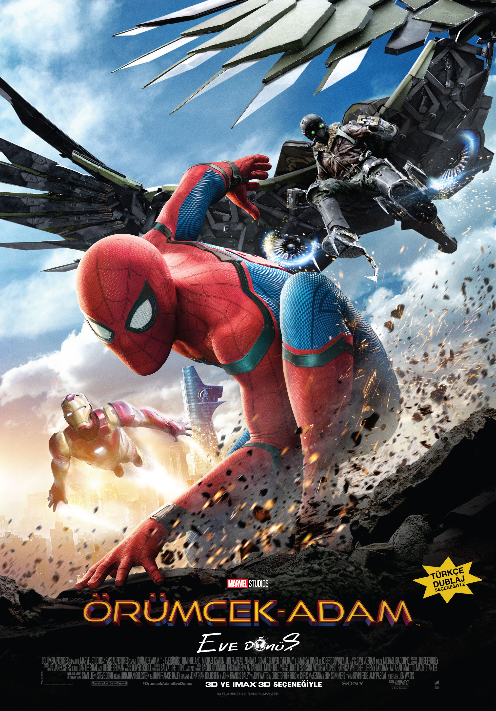

MERT EFE TINARÖZÜ
Hakkımda:
Merhaba,ben Mert Efe TINARÖZÜ İstanbulda yaşıyorum ve 17 yaşındayım. Küçüküğümden gelen bir bilgisayar merakım var ve bu merakımı Bolluca Mesleki Ve Teknik Anadolu Lisesi'nde alan
seçimlerinde Wep Programcılığı alanını seçerek giderdim,şuan lise 3 öğrencisiyim o yüzden biraz temelim var fakat daha fazlasını öğrenmek istiyorum.
Bunun için Insider Code Acedemi'ye üye oldum , konu anlatım tarzı olsun bir problemle karşılaştığımızda hemen yardıma koşan ekipleri olsun şuanlık herşey süper gidiyor.
Ve bu derslerden her hafta kendime yeni bilgi katmam beni daha çok motive ediyor, umarım böyle devam eder.
İlgi Alanlarım
En Sevdiğim Filmler:
Spiderman-HomeComing
Thor
Bird Box
En Sevdiğim Diziler:
The Walking Dead
Lucifer
The Last of Us
En Sevdiğim Kitaplar:
Sherlock Holmes Baskerville’lerin Köpeği
Sherlock Holmes Kızıl Dosya
Yüzüklerin Efendisi: Yüzük Kardeşliği
En Sevidğim Film :

Örümcek-Adam: Eve Dönüş, Columbia Pictures ve Marvel Studios tarafından ortaklaşa
üretilen ve Sony Pictures Releasing tarafından dağıtılan, Marvel Comics karakteri
Örümcek Adam çizgi romanlarından uyarlanan 2017 yapımı ABD süper kahraman filmidir.
En Sevdiğim Dizi :
 The Walking Dead (Türkçe: Yürüyen Ölüler), Frank Darabont tarafından geliştirilen bir
Amerikan televizyon dizisidir. Hikâyesi, Robert Kirkman, Tony Moore ve Charlie Adlard 'ın
aynı adlı çizgi romanına dayanmaktadır. Dizinin başrolünde, geçirdiği bir kaza sonrası
girdiği komadan beklenmedik biçimde uyanan ve artık tüm dünyaya George A. Romero'nun korku
filmlerindeki zombileri andıran etobur "aylaklar"ın egemen olduğunu keşfeden şerif yardımcısı
Rick Grimes rolüyle Andrew Lincoln yer almaktadır.
The Walking Dead (Türkçe: Yürüyen Ölüler), Frank Darabont tarafından geliştirilen bir
Amerikan televizyon dizisidir. Hikâyesi, Robert Kirkman, Tony Moore ve Charlie Adlard 'ın
aynı adlı çizgi romanına dayanmaktadır. Dizinin başrolünde, geçirdiği bir kaza sonrası
girdiği komadan beklenmedik biçimde uyanan ve artık tüm dünyaya George A. Romero'nun korku
filmlerindeki zombileri andıran etobur "aylaklar"ın egemen olduğunu keşfeden şerif yardımcısı
Rick Grimes rolüyle Andrew Lincoln yer almaktadır.
En Sevidğim Kitap :
Sherlock Holmes Kizil Dosya
Benim adım Sherlock Holmes, benim işim başkalarının bilmediklerini bilmektir."
Dünyanın en ünlü hayali dedektifi Sherlock Holmes, ilk dosyasını açıyor ve Dr.
Watson ile ilk karşılaşmasını yaşıyor. Dr. John Watson, Sherlock Holmes ile
"Kızıl Dosya" macerasının başında karşılaşır. Afganistan’dan dönen Watson, bir
ev arkadaşı arayan Holmes’le tanıştırılır. "...Onu yakalayacağım Doktor, bire iki
bahse bile girerim. Sana da teşekkür etmeliyim. Sen olmasan bu vakaya karışmazdım.
Karışmasaydım da şimdiye kadar ki en hoş dosyamdan mahrum kalırdım. Kızıl Dosya, ne
dersin? Neden biraz sanat ağzı kullanmayalım. Hayatın renksiz yumağının içinden her
zaman kızıl bir cinayet ipliği geçer. Bizim görevimiz o ipliği oradan çekmek, ayırmak
ve tüm ayrıntısını ortaya çıkarmak.